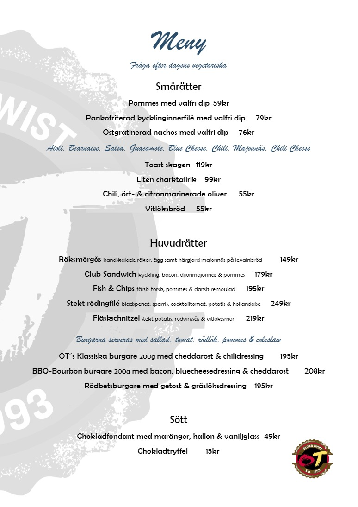

Fråga efter dagens vegetariska
Smårätter
Pommes med valfri dip
59kr
Pankofriterad kycklinginnerfilé med valfri dip
79kr
Ostgratinerad nachos med valfri dip
76kr
Aioli, Bearnaise, Salsa, Guacamole, Blue Cheese, Chili, Majonnäs, Chili Cheese
Toast skagen
119kr
Liten charktallrik
99kr
Chili, ört
-
& citronmarinerade oliver
55kr
Vitlöksbröd
55kr
Huvudrätter
Räksmörgås
handskalade räkor, ägg samt härgjord majonnäs på levainbröd
149kr
Club Sandwich
kyckling, bacon, dijonmajonnäs & pommes
179kr
Fish & Chips
färsk
torsk, pommes & dansk remoulad
195kr
Stekt rödingfilé
bladspenat, sparris, cocktailtomat, potatis & hollandaise
249kr
Fläskschnitzel
stekt potatis, rödvinssås & vitlökssmör
219kr
Burgarna serveras med sallad, tomat, rödlök, pommes & coleslaw
OT ́s Klassiska burgare
200g
med cheddarost & chilidressing
195kr
BBQ
-
Bourbon
burgare
200g
med bacon, bluecheesedressing & cheddarost
208kr
Rödbetsburgare med getost & gräslöksdressing
195kr
Sött
Chokladfondant med maränger, hallon & vaniljglass
49kr
Chokladtryffel
15kr
Meny
